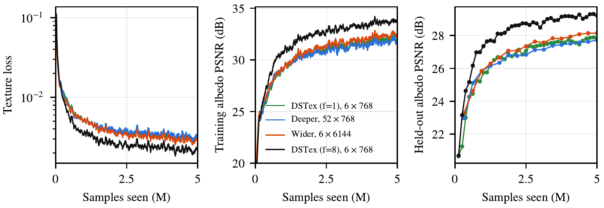

ICLR 2027 · Anonymous author response
DSTex — Response to reviewers
Dense Surface Decoding for Native PBR Texture Generation
Go to your response
Responses to all reviewers
Six topics, with the supporting tables and figures alongside each answer.
What does dense surface decoding add?
Question · paraphrasedHow does the Anchor Densifier differ from prior token expansion and native texturing methods, and what is the specific benefit of offset modulation?
We study how to allocate decoder capacity on a known surface while keeping the diffusion latent count fixed. Fine feature tokens are constructed at locations sampled directly from the input mesh. The new comparisons quantify the benefit relative to increasing decoder width or depth and increasing the inference latent count.
We build on decoder-side densification. The distinction is how its spatial support is constructed for material fields on a given mesh, where lettering and thin material patterns can vary even on flat geometry.
| Prior work | Representation or decoding | DSTex distinction |
|---|---|---|
| MSVS-VAE | Hierarchical geometry-token expansion with learned anchor offsets and multi-scale aggregation. | Fine anchors are sampled from the given mesh; material features use shared projection and relative-position modulation. |
| NaTex | Continuous material queries; albedo generation followed by metallic/roughness conditioned on albedo. | Albedo and MR share a latent set and one diffusion model. |
| LaFiTe / TRELLIS.2 | Local voxel features or decoded material attributes, with interpolation for queries. | Mesh-sampled feature tokens support global continuous material queries. |
These representations make different modeling and computational trade-offs. The comparisons do not establish a universal advantage of latent sets over sparse voxel representations.
Relative FiLM has measured trade-offs. It improves albedo/MR PSNR and albedo SSIM; albedo LPIPS changes only marginally (0.1349 → 0.1342), while MR LPIPS and SSIM favor absolute positional embeddings. We treat it as a position-conditioning choice with mixed perceptual effects. The practical evidence for densification comes from the capacity comparison and latent-budget comparison.
In the revision · Section 2; Section 4.2; Table 2(c, f).
Does the gain come only from a larger decoder?
Question · paraphrasedCompare densification with deeper or wider standard decoders under a similar computational budget.
At 4K latents, DSTex achieves higher held-out albedo PSNR than the deeper and wider decoders at comparable decoding latency. Their latencies are 57.0, 52.6, and 49.6 ms, respectively. DSTex uses 58M parameters, compared with 491M and 3.62B, and has lower peak decoding memory.
All four models train from scratch at 4K latents for 5M sample presentations, using the same data and training recipe. Figure 10 evaluates held-out quality at the same 4K latent count.
| Decoder | Parameters | Decoding (ms) | Peak (GiB) |
|---|---|---|---|
| DSTex (f=1) | 57M | 6.6 | 0.52 |
| Deeper (52 × 768) | 491M | 52.6 | 1.35 |
| Wider (6 × 6144) | 3.62B | 49.6 | 7.91 |
| DSTex (f=8) | 58M | 57.0 | 1.19 |
Baking is timed separately. Peak decoding memory includes decoder weights.

The six reconstruction metrics in Table 2 are evaluated separately at 16K inference latents, keeping the trained weights fixed. DSTex improves all six over the deeper and wider variants at that setting; their actual 16K costs are reported separately in Table 3.
Decoding here constructs the dense surface features. Per-texel material queries are included in the separately timed texture-baking stage.
In the revision · Section 4.2; Table 2(e, f); Table 3; Figure 10.
Why densify instead of using more latent tokens?
Question · paraphrasedReport full-set quality and end-to-end runtime for both 16K settings, especially the densified 16K model against the unexpanded 32K model.
Both 16K settings are now evaluated on all 1,000 assets. Compared with the 32K model without densification, the 16K densified model reduces end-to-end time from 45.25 to 24.67 s (45.5%), with comparable relighting LPIPS and about 32%/31% lower metallic/roughness MSE.
Nine of the eleven quality metrics numerically favor the densified 16K setting. Both CMMD scores favor the larger latent count. Each VAE–DM pair is kept fixed when increasing its inference latent count.
| Model | Latents | Time (s) ↓ | Relit LPIPS ↓ | M MSE ↓ | R MSE ↓ | MR LPIPS ↓ |
|---|---|---|---|---|---|---|
| DSTex (f=1) | 16K | 17.94 | 0.0444 | 0.0619 | 0.0472 | 0.3665 |
| DSTex (f=8) | 16K | 24.67 | 0.0425 | 0.0392 | 0.0316 | 0.3258 |
| DSTex (f=1) | 32K | 45.25 | 0.0427 | 0.0580 | 0.0460 | 0.3648 |
| DSTex (f=8) | 32K | 55.49 | 0.0421 | 0.0334 | 0.0282 | 0.3240 |
The highlighted 16K setting is compared with the unexpanded 32K setting. Full metrics, including both CMMD exceptions, are below.
Full generation comparison · Table 1
| Method | Latents | UV CLIP-FID ↓ | UV CMMD ↓ | UV CLIP-I ↑ | UV LPIPS ↓ | Relit CLIP-FID ↓ | Relit CMMD ↓ | Relit CLIP-I ↑ | Relit LPIPS ↓ | M MSE ↓ | R MSE ↓ | MR LPIPS ↓ | Time (s) ↓ |
|---|---|---|---|---|---|---|---|---|---|---|---|---|---|
| LumiTex | -- | 17.57 | 1.263 | 0.9341 | 0.2867 | 10.73 | 1.099 | 0.9538 | 0.0805 | 0.1402 | 0.0905 | 0.6844 | 190.4 |
| UniTEX | -- | 19.28 | 1.272 | 0.9274 | 0.3041 | 11.50 | 1.092 | 0.9503 | 0.0903 | 0.1478 | 0.0768 | 0.9470 | 83.5 |
| TRELLIS.2 | -- | 17.24 | 1.154 | 0.9346 | 0.2840 | 10.99 | 1.020 | 0.9532 | 0.0769 | 0.1379 | 0.0939 | 0.6591 | 28.6 |
| DSTex (f=1) | 16K | 12.46 | 0.872 | 0.9528 | 0.2025 | 9.97 | 0.609 | 0.9742 | 0.0444 | 0.0619 | 0.0472 | 0.3665 | 17.94 |
| DSTex (f=8) | 16K | 11.59 | 0.842 | 0.9559 | 0.1909 | 9.74 | 0.597 | 0.9753 | 0.0425 | 0.0392 | 0.0316 | 0.3258 | 24.67 |
| DSTex (f=1) | 32K | 12.12 | 0.834 | 0.9540 | 0.1965 | 9.76 | 0.573 | 0.9751 | 0.0427 | 0.0580 | 0.0460 | 0.3648 | 45.25 |
| DSTex (f=8) | 32K | 11.56 | 0.819 | 0.9560 | 0.1884 | 9.65 | 0.554 | 0.9757 | 0.0421 | 0.0334 | 0.0282 | 0.3240 | 55.49 |
Quality is averaged over six reference lightings on 1,000 assets. Relighting uses six other randomly sampled HDRIs. Times are mean end-to-end runtime on the same asset set, from GLB loading through export. UniTEX uses metallic = 0 and roughness = 0.5. Bold indicates the best reported value in each column.
In the revision · Section 4.3; Table 1; Figure 7.
Where is the time spent?
Question · paraphrasedSeparate material decoding and texture baking, report memory, and show the cost of different expansion factors.
At the default 32K setting, decoding takes 2.98 s and 2K texture baking takes 8.47 s. Densification runs after diffusion; denoising takes 40.98 s for f=8 and 40.42 s for f=1. The table below reports mean stage times over the same 1,000 assets.
| Stage | f=8 (default) | f=1 |
|---|---|---|
| Mesh preparation | 0.26 | 0.25 |
| Conditioning and VAE geometry encoding | 1.04 | 1.09 |
| Diffusion sampling (25 steps, CFG 3) | 40.98 | 40.42 |
| Material decoding | 2.98 | 0.072 |
| Texture baking (2K) | 8.47 | 1.64 |
| Textured GLB export | 1.76 | 1.78 |
| Total | 55.49 | 45.25 |
Baking includes UV rasterization, per-texel material queries, seam dilation, and transfer of the baked textures to host memory. Model loading is excluded. Timing uses A100 SXM4 GPUs with the default cuDNN attention backend for decoding and material queries.
For the default f=8, 32K configuration, full-pipeline peak memory is 42.5 GiB (median over tasks) and 45.7 GiB (maximum). These per-process measurements include the allocator’s reserve.
Expansion-factor costs · Table 5
| f | Latents | Support tokens | Decode (ms) | Bake 2K (s) | Peak (GiB) | Albedo PSNR | MR PSNR |
|---|---|---|---|---|---|---|---|
| 1 | 16K | 16K | 17.6 | 1.06 | 0.83 | 31.63 | 33.81 |
| 4 | 16K | 64K | 204 | 2.39 | 2.0 | 33.17 | 34.59 |
| 8 | 16K | 128K | 729.6 | 4.30 | 3.50 | 34.22 | 35.21 |
| 1 | 32K | 32K | 55 | 1.51 | 1.2 | -- | -- |
| 4 | 32K | 128K | 757 | 4.25 | 3.5 | -- | -- |
| 8 | 32K | 256K | 3030 | 8.32 | 6.6 | -- | -- |
These are the 4K-trained, six-layer VAE ablations, with width 768. Table 4 above uses the final 8K-trained VAE–DM pairs. Peak here is decoding memory, including decoder weights; it is distinct from the complete pipeline's memory usage. Quality at 32K was not reported for these ablations.
The revised runtime excludes redundant input-texture loading and mesh/map writes in the original timing pipeline. The model weights and sampling settings are unchanged; the revision documents this measurement correction.
In the revision · Appendix C; Tables 3–6.
Are the material channels improving?
Question · paraphrasedSeparate albedo from metallic/roughness improvements, and test material predictions under varied reference lighting.
We add metallic MSE, roughness MSE, and MR LPIPS on the shared UV atlas. At 32K latents, adding densification reduces metallic and roughness MSE by 42.4% and 38.7%. Evaluation now covers six reference lightings per asset, with relighting under six other randomly sampled HDRIs.
A separate fixed-lighting channel-swap analysis on the same 1,000 assets attributes 47% of the relighting LPIPS improvement to MR at 256², and 42% at 1024², for f=8 vs. f=1 at 32K.
Single-image material inference admits multiple solutions. In Figure 5 and the additional lighting examples, DSTex's base color and MR remain more consistent and closer to the target than TRELLIS.2's. These examples complement the average-quality evaluation; they do not establish unique recovery of the true materials.

Reference lighting · interactive comparison
Columns use different input lights. Rotate the models or change the viewing light to compare DSTex, TRELLIS.2, and ground truth.
Preparing interactive 3D examples…
Swipe horizontally to see every reference and ground truth →
In the revision · Table 1; Figure 5; Appendix D.
How does the method behave on real photographs?
Question · paraphrasedThe original qualitative examples mainly use generated images. Show results on photographs with real lighting.
The revision adds real-photograph results, including unseen sides and failure cases. Each example textures a mesh generated from the input photograph. Figure 9 and the appendix use the default f=8 model with 32K inference latents. Ground-truth materials are unavailable for these objects, so this evidence is qualitative.
The 16 examples below are interactive. Rotate them together, switch illumination, or inspect base color, metallic, and roughness separately. Input photographs and their source credits are available for each object.
Failures remain: roughness can follow painted albedo patterns, and a highlight on a camera lens can remain in base color. The revised limitations discuss these observations and possible explanations.
Real photographs · interactive results
Drag a model to rotate. Select an input photograph to enlarge it, or switch sets to view all 16 examples.
Preparing interactive 3D examples…
In the revision · Figure 9; Appendix D, Figures 13–15.